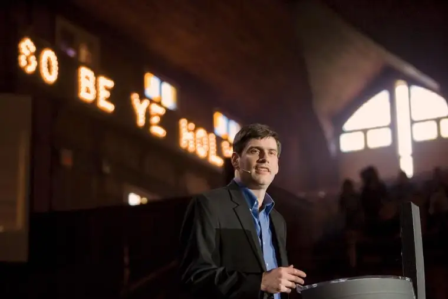

{kind=link}

CHARLOTTE, N.C. — When he was around 12, William “Will” Franklin Graham IV, grandson of the influential evangelist Billy Graham, was in California with his father at one of his grandfather’s many national speaking events.
“The line to meet him went outside the building and wrapped around the hotel,” Will shared recently. “I wanted to see my granddaddy, but I wasn’t going to wait in line.”
So, like any kid would, he began walking toward the front — until a police officer admonished him for cutting in line. Just then, his grandfather, seeing him, called out, “Will!” And he was allowed to run to him. “That changed everything for me that day.”
When he visits Fargo Monday to celebrate 30 years of ministry of The Perry Center and Christian Family Life Services, Will plans to share other insights on his grandfather and his ministry, as well as inspire attendees in their Christian faith and encourage them with hope.
Hope is what his grandfather offered him all those years ago.
“That was pretty spiritual, if you think about it,” Will said. “We have access to God the father, and we get to go straight to him. It’s a beautiful picture of my heavenly father loving me, just as my earthly grandfather loved and reached out to me that day.”
Will said what people need most today — and what he aims to bring to Fargo some 28 years after his grandfather visited our area in 1987 as part of the Peaks to Prairie crusade — is “to hear a word from God.”
“I think that’s where a lot of the problems start,” he said. “We focus so much on man’s wisdom and turn our hearts on God. We say he’s old-fashioned and doesn’t understand us. But he does, and he’s given us his word to help us.”
Christian Family Life Services, a nonprofit adoption-placing agency, started in 1985 with a mission “to display God’s love to children, birth parents and families by providing Christ-centered adoption services that have an eternal impact by growing forever families.”
The Perry Center, a Christian maternity home for single women in unplanned pregnancies, became licensed that same year, and opened the following September.
Patricia and Darold Larson, founders, named the center after David and Judy Perry, who died in a car accident in 1984, at the request of one of their eight children.
“Dr. Perry was an OB/GYN whose heart was torn to see babies killed before birth by distraught mothers often responding to pressure from others,” notes the Perry Center website.
The couple was known for offering their home to women in those situations, and had envisioned a maternity home here. The Larsons started the center “to carry out this work of mercy.”
The Perry Center, which can accommodate up to 12 women at a time, began in a small house in Fargo at its 1986 opening, transitioned to a second facility near North Dakota State University in 1993, and in October 2005 opened several buildings at its current site in south Fargo to house both the center and administrative offices.
Patricia Larson recalls well those earlier years and how the center came to be. A stay-at-home mother of three young boys then, she wasn’t looking to take on more work, she said, but through the influence of the Perry family, developed a heart for abortion-vulnerable women.
“I’ve always said we’re just seed planters, and some seeds fall on dry ground,” she said. “God opens and closes doors, but it’s always a blessing to see lives that have been changed forever.”
Though Darold passed away in January 2014, Patricia said the Perry Center has remained close to her heart. Her son Joe, currently on the board, is a college friend of Will Graham’s, which is how he was invited to Fargo.
Betty Helmer, current director of the Perry Center, said she’s thrilled to celebrate 30 years of ministry here.
“That’s an impressive number for the Fargo area, and to have this in our backyard is a blessing,” Helmer said. “We’re also looking forward to bringing in Will and for him to speak to a different generation than when his grandfather was here.”
[For the sake of having a repository for my newspaper columns and articles, I reprint them here, with permission, a week after their run date. The preceding ran in The Forum newspaper on Sept. 26, 2015.]